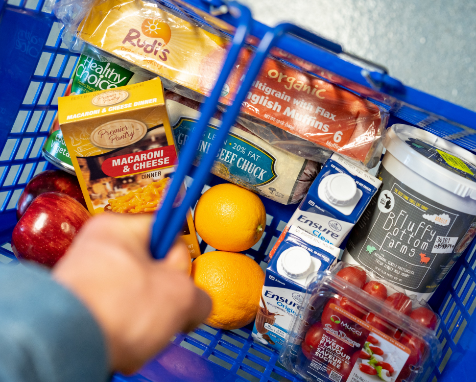

Welcome to Maize & Blue Cupboard

Our Mission
To ensure members of the University of Michigan community—whether on a tight budget or physically restrained from getting to a grocery store—receive equitable access to healthy, nutritious, and nourishing food and the ability to prepare it for themselves or others.
[Enter more of your own content here - that includes changing the content of this page from Academic support to something else!]